Distribuidor autorizado
Acesso a produtos originais SKF e suporte de uma rede qualificada.
SKF na Sueca · Desde 1998
Há mais de um século, a SKF reduz o atrito e mantém o mundo em movimento. Na Sueca, essa tecnologia chega à sua operação com orientação técnica.
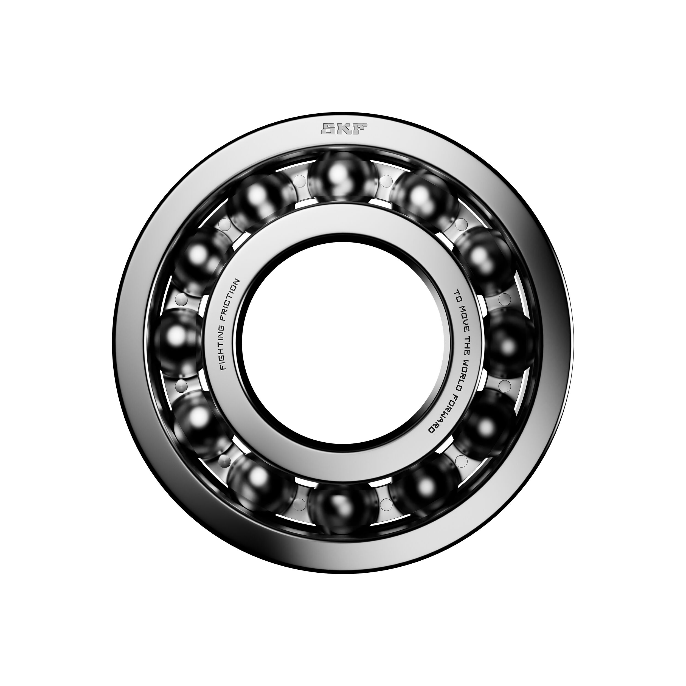
Menos atrito para uma operação mais confiável.
A Sueca
Portfólio, orientação técnica e presença para manter a indústria em movimento.
Visitar sueca.com.brCertificações
Acesso a produtos originais SKF e suporte de uma rede qualificada.
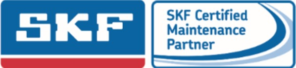
Capacitação técnica para atuar com soluções e boas práticas SKF.
Especialização em aplicações agrícolas e ambientes de alta contaminação.
A força da SKF
Engenharia em cada componente. Escolha técnica para cada aplicação.
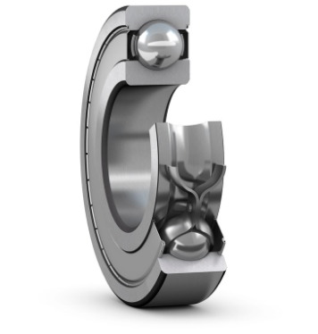
Portfólio SKF
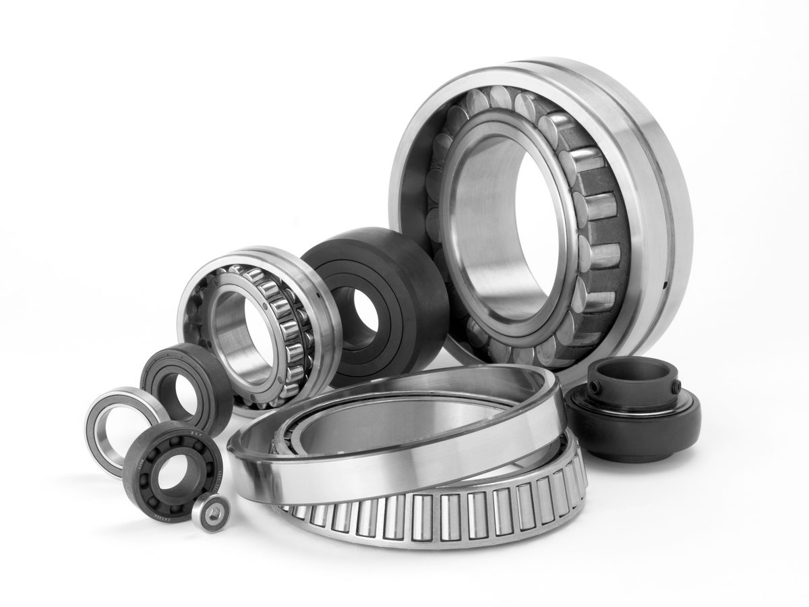
Para diferentes cargas e velocidades.
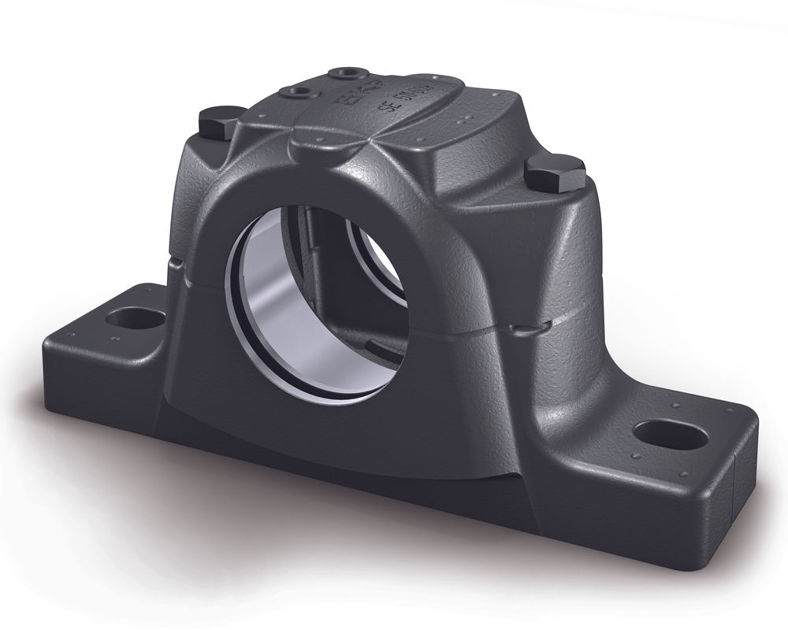
Suporte para conjuntos rotativos.
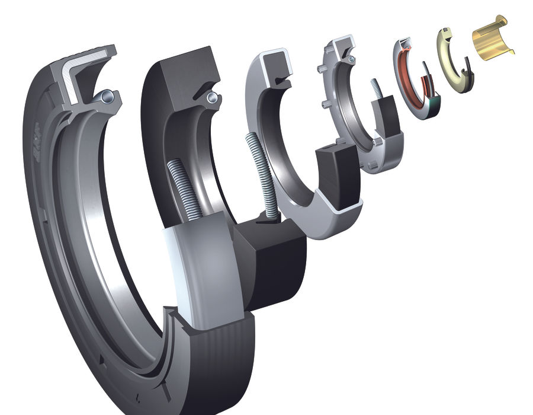
Proteção contra contaminação.
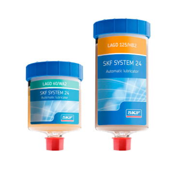
Lubrificação no ponto certo.
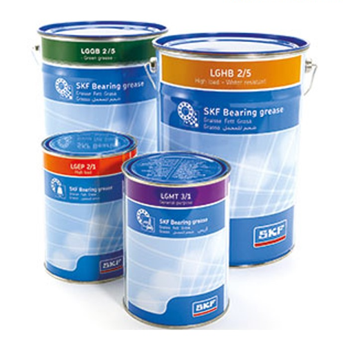
Para cargas e ambientes severos.
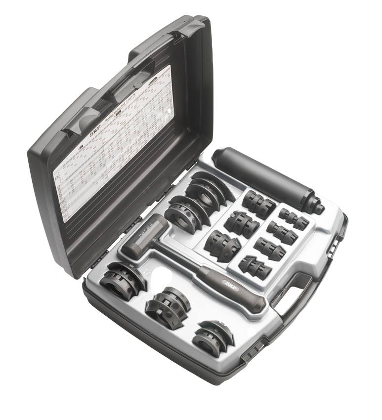
Manutenção com mais precisão.
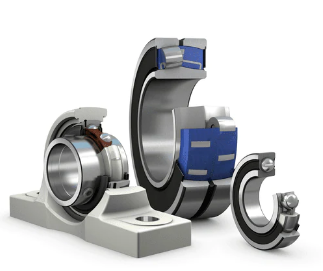
Proteção em ambientes úmidos.
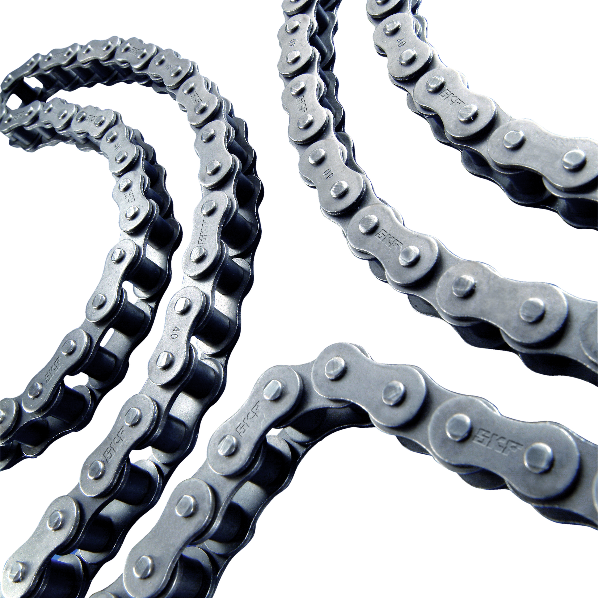
Transmissão de potência confiável.
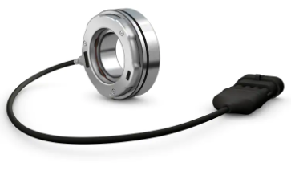
Monitoramento integrado ao conjunto.
Uma aplicação específica pede uma escolha certa.
Solicitar orientaçãoOnde a SKF atua
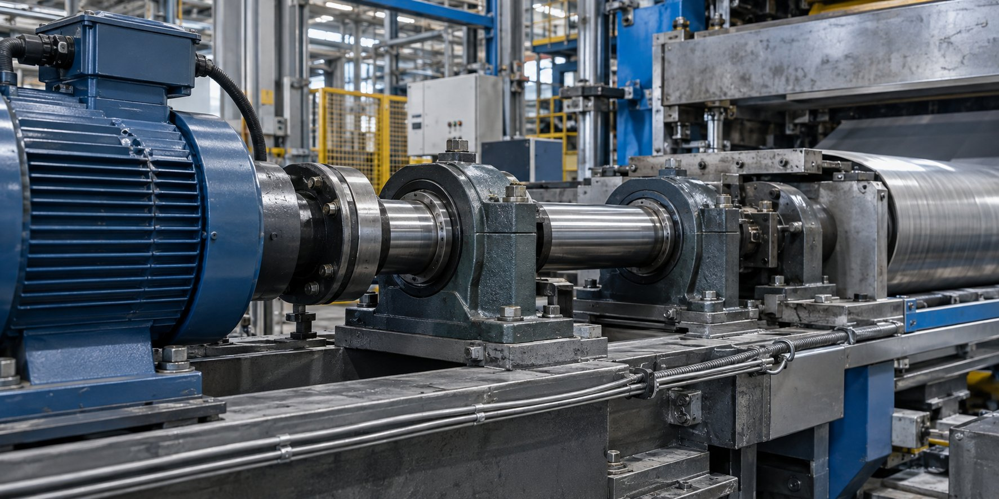
Para linhas que não podem parar.
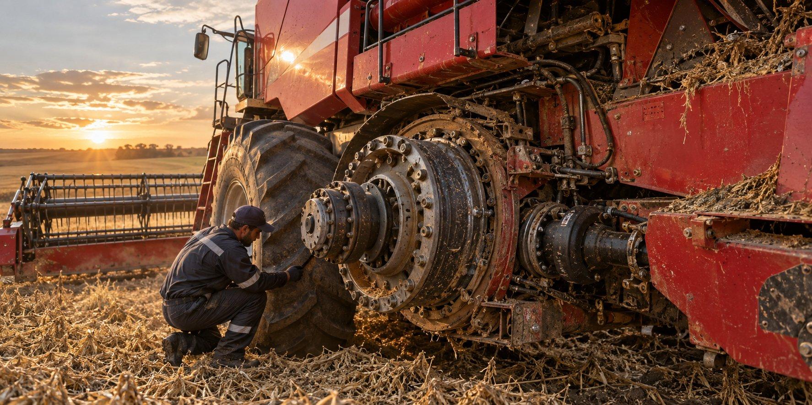
Para trabalho intenso, poeira e vibração.
Cenas de aplicação ilustrativas.
Ciclo de vida SKF
Montagem, lubrificação e monitoramento: tudo importa.
FAQ
O aquecimento pode envolver carga, rotação, lubrificação, montagem, vedação, folga e temperatura. A escolha correta depende da aplicação. Fale com a Sueca para avaliar o caso.
Vida útil reduzida pode vir de montagem inadequada, contaminação, lubrificação incorreta ou ferramenta errada. As ferramentas MAPRO ajudam a proteger o rolamento desde a instalação.
A seleção considera carga, velocidade, ambiente, contaminação, espaço disponível, vedação, montagem e lubrificação. A Sueca pode apoiar a identificação da solução SKF adequada.
A Sueca é Distribuidora Autorizada SKF. Para verificação adicional, utilize os canais oficiais da SKF, incluindo o aplicativo Authenticate. Saiba como verificar.
Um rolamento costuma reunir anel interno, anel externo, elementos rolantes e gaiola. A pista é o canal nos anéis por onde os elementos rolantes circulam.
Ainda ficou com alguma dúvida?
Precisa de orientação para escolher o produto ideal? Nossa equipe está pronta para ajudar.